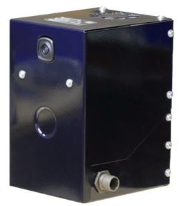
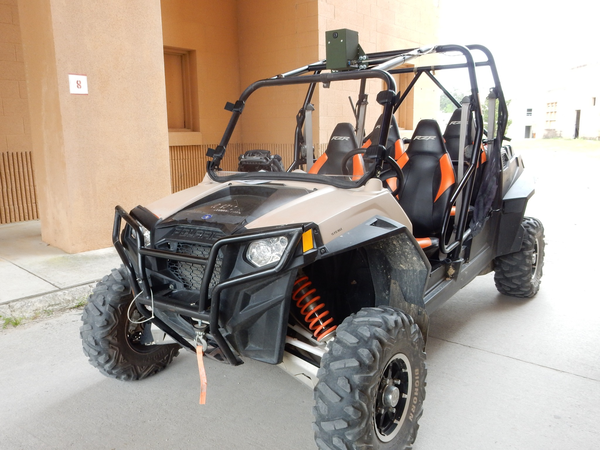
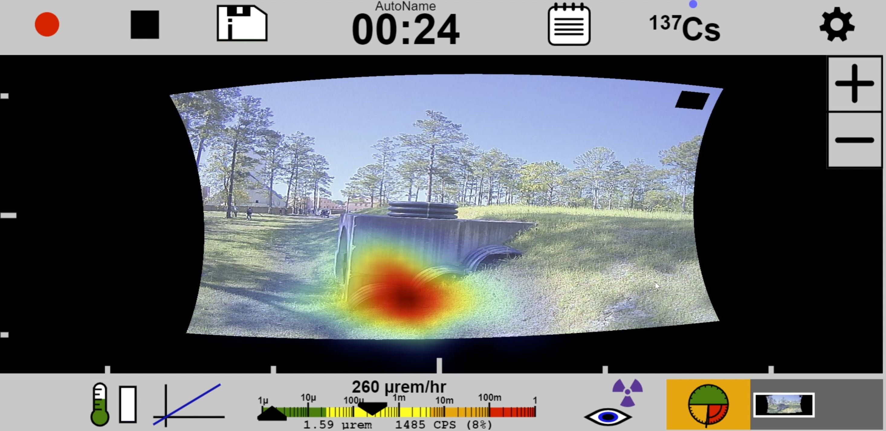
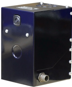

Ruggedized Integrable Detector Module
극한 환경속에서 효율적으로 방사선원의 식별 및 위치를 찾아낼 수 있는 감마선 보안검색 솔루션. 해당 솔루션은 자동차, 무인장갑차 등에 장착되어 극한의 환경속에서 방사선원을 효율적으로 탐색하고 수색하는 역할을 수행.
- 컴팩트하고 튼튼함
- 짧은 시간에 기동이 가능
- 극한의 날씨와 악조건의 환경속에서 사용가능


Features
- - Compact and light-weight size
- - Fast startup
- - Weather-resistant and durable design
Integration With
- - Vehicles
- - Robots
- - Monitoring stations
- - Other sensor suites
연례 DTRA 화학생물작전분석(CBOA) 행사
T 시리즈 강화형 감마선 이미징 장치를 RZR 사륜오토바이에 장착하고 미국 특수부대원이 이를 조종하여 알 수 없는 환경에서 방사선원을 찾고, 위치를 파악하고, 식별하는 임무를 수행하였습니다.
행사 중 훈련원들은 T410P를 이용하여 터널 입구 바깥의 얇은 플라스틱 관 조각 속에 숨겨진 강력한 세슘-137 선원을 발견하였습니다.
이는 삼차원 방사선 이미징 기술이 현장에서 안전하고 빠르게 원거리에서 결과를 제공할 수 있는 한 가지 사례입니다.



| Model | Resolution (@662 keV) |
Spectral Range (keV) |
Imaging Range (keV) |
Coll. (W*) |
CZT Vol. (cm3) |
Weight (lbs.) |
Battery (hrs.) |
IP Rating |
Temp. (°F) |
Startup Time (분) |
User Interface |
|
|---|---|---|---|---|---|---|---|---|---|---|---|---|
 |
T410 | < 1.1 | 50 to 3000 | 50 to 3000 | N/A | >19 | 8.7 | N/A | IP67 | -40 to 122 | < 1.5 | Webpage/ API |
| T410+ | < 0.8 | 50 to 3000 | 50 to 3000 | N/A | >19 | 8.7 | N/A | IP67 | -40 to 122 | < 1.5 | Webpage/ API |
|
| T400S | < 1.1 | 50 to 3000 | N/A | N/A | >19 | 8.7 | N/A | IP67 | -40 to 122 | < 1.5 | Webpage/ API |
|
| T400S+ | < 0.8 | 50 to 3000 | N/A | N/A | >19 | 8.7 | N/A | IP67 | -40 to 122 | < 1.5 | Webpage/ API |
|
| T410P | < 1.1 | 50 to 3000 | 50 to 3000 | 3/16 | >19 | 10.9 | N/A | IP67 | -40 to 122 | < 1.5 | Webpage/ API |
|
| T410P+ | < 0.8 | 50 to 3000 | 50 to 3000 | 3/16 | >19 | 10.9 | N/A | IP67 | -40 to 122 | < 1.5 | Webpage/ API |
|
| T410SP | < 1.1 | 50 to 3000 | N/A | 3/16 | >19 | 10.9 | N/A | IP67 | -40 to 122 | < 1.5 | Webpage/ API |
|
| T410SP+ | < 0.8 | 50 to 3000 | N/A | 3/16 | >19 | 10.9 | N/A | IP67 | -40 to 122 | < 1.5 | Webpage/ API |